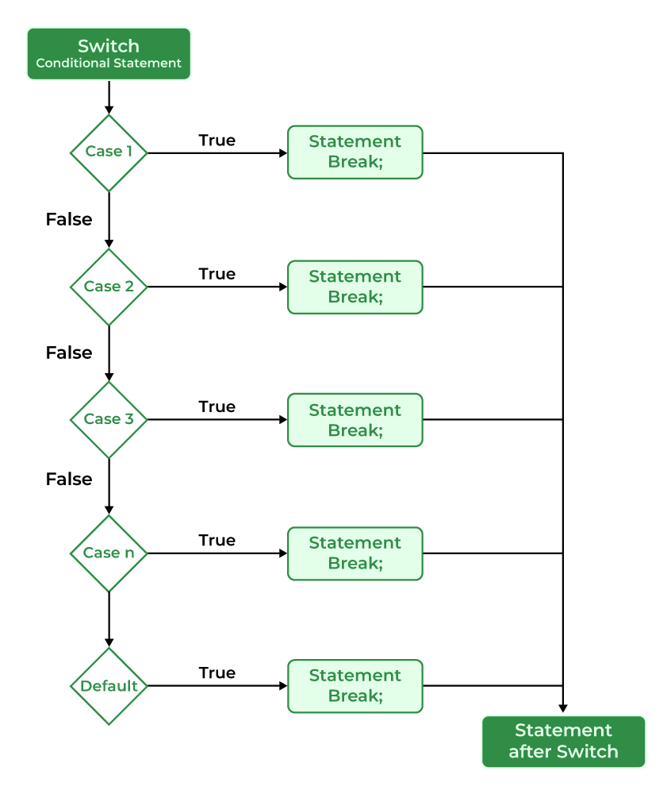

|  |
Switch statement is used when you want to execute something based on some values. It is usually better than multiple if statements when we have to check for multiple possible conditions. |
switch ($x) {
case -1:
$x = $x * $x; //instruction 1
echo $x; //instruction 2
break;
case 1:
$x = $x / $x; //instruction 3
echo $x; //instruction 4
break;
default:
echo $x; //instruction 5
}